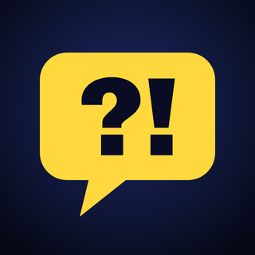

Eso Nadie Lo Dice
Datos que casi nadie cuenta. Un tema distinto en cada video.
Ver el canal en YouTubeSobre la herramienta de publicación
Fabrica Eso Nadie Lo Dice es una herramienta privada del dueño del canal. Sirve para subir y programar los videos del propio canal y consultar sus estadísticas mediante las API de YouTube. No está abierta al público y no accede a cuentas de otras personas.